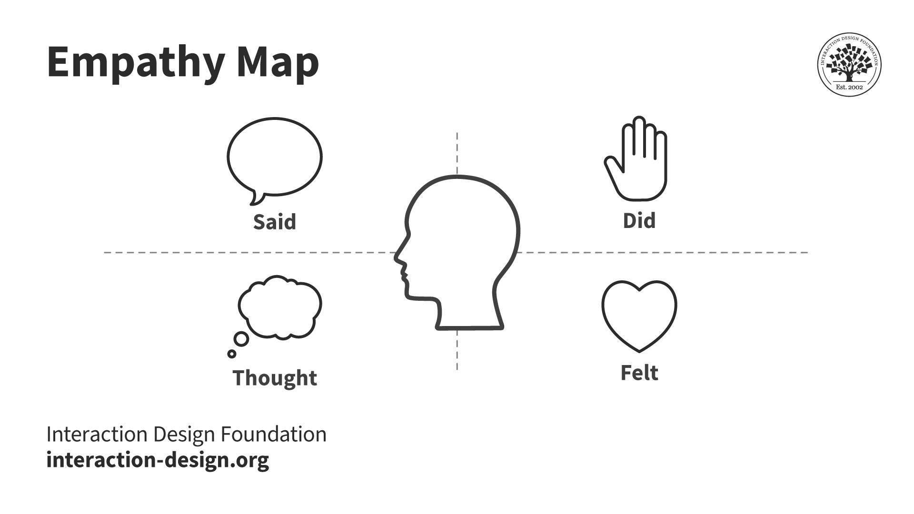
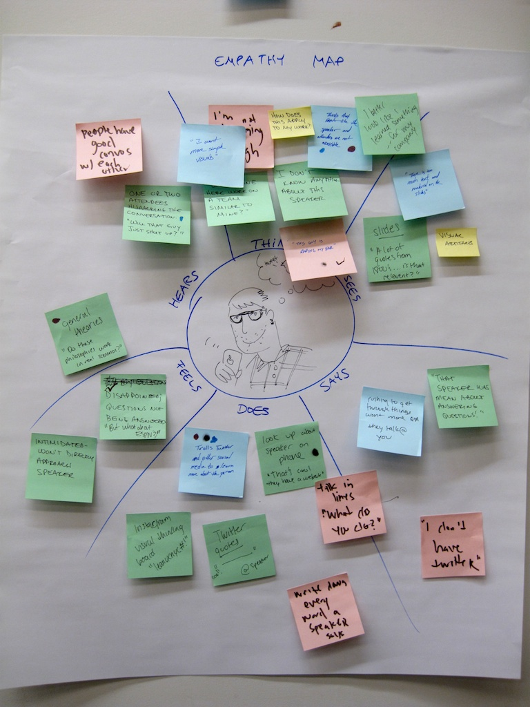

Empathy map
About
An empathy map is a four-quadrant diagram that externalizes what a research team knows — or believes — about a specific user type. The four quadrants are Says (direct quotes), Thinks (what occupies their mind, including things they wouldn't say aloud), Does (observable actions and behaviors), and Feels (emotional states and attitudes). A fifth zone in the center identifies the user. The map is built collaboratively, drawing on interview transcripts, observation notes, and session recordings. Its purpose is not to replace personas but to make tacit research knowledge explicit and debatable, so a whole team can align on who the user actually is.
When to use
Use an empathy map after qualitative research and before moving into synthesis or persona development. It is particularly useful when the research team and the design team are different people — the map transfers understanding without requiring everyone to have sat in the interviews. It also works well as a workshop activity during discovery.
When not to use
Do not create an empathy map without actual research to ground it. An empathy map made from assumptions is a bias map. Also avoid treating empathy maps as permanent artifacts — they should be updated when new research data arrives. They are a synthesis tool, not a deliverable.
References
Examples
Click any example to view full size and visit the original source.



